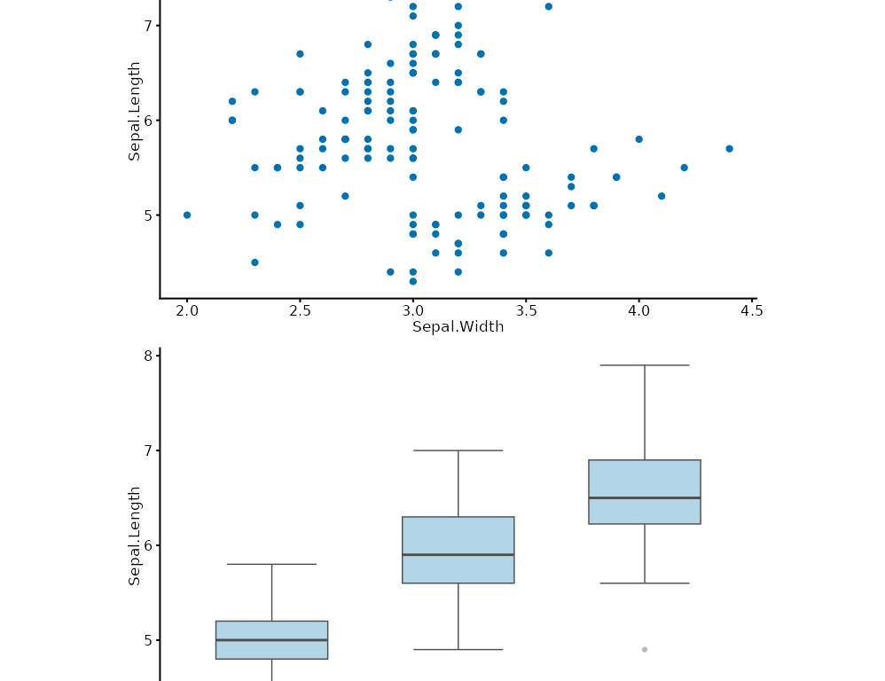

compose_grid() arranges plotit or plotit_composite objects into a
grid via patchwork::wrap_plots(). The default vertical stack (ncol = 1 when neither ncol nor nrow is given) is the most common layout for
report figures. Pipe the result to label_title() / style() /
export() just as with a single plotit.
Usage
compose_grid(
...,
ncol = NULL,
nrow = NULL,
byrow = TRUE,
widths = NULL,
heights = NULL,
guides = "collect",
axes = "keep",
axis_titles = axes,
design = NULL,
tag_levels = NULL
)Arguments
- ...
plotitorplotit_compositeobjects to arrange.- ncol
Number of columns.
NULL(default) = auto; if bothncolandnrowareNULLdefaults to 1 (vertical stack).- nrow
Number of rows.
NULL(default) = inferred fromncoland the number of plots.- byrow
Fill direction:
TRUE(default) = row-major.- widths
Relative column widths, e.g.
c(1, 2).- heights
Relative row heights.
- guides
"collect"(default) to merge identical legends into one,"keep"to keep per-panel legends,NULLfor patchwork auto-detect.- axes
"collect"to share all axes,"collect_x"or"collect_y"for a single direction,"keep"(default) to keep axes independent.- axis_titles
Axis-title sharing: defaults to the
axesvalue;"collect"merges repeated axis titles onto one panel,"collect_x"/"collect_y"per direction,"keep"independent.- design
Layout specification replacing
ncol/nrow/byrow: either a text layout (one row per line, digits = plot order,#= empty cell, e.g. the two-row layout "122" / "133") or a list of numeric area vectorsc(top, left, bottom, right). When given, it wins overncol/nrow/byrow(a warning flags the overlap).- tag_levels
Sub-figure tag scheme:
"A"for uppercase letters,"a"for lowercase,"1"for numbers,"i"for roman numerals, or a custom character vector (e.g.c("(a)", "(b)")).NULL= no tags.
Value
A plotit_composite object. Pipe it to label_title(),
style(), or export().
Examples
p1 <- plotit(iris, encode(x = Sepal.Width, y = Sepal.Length)) |> mark_point()
p2 <- plotit(iris, encode(x = Species, y = Sepal.Length)) |> mark_boxplot()
compose_grid(p1, p2)
